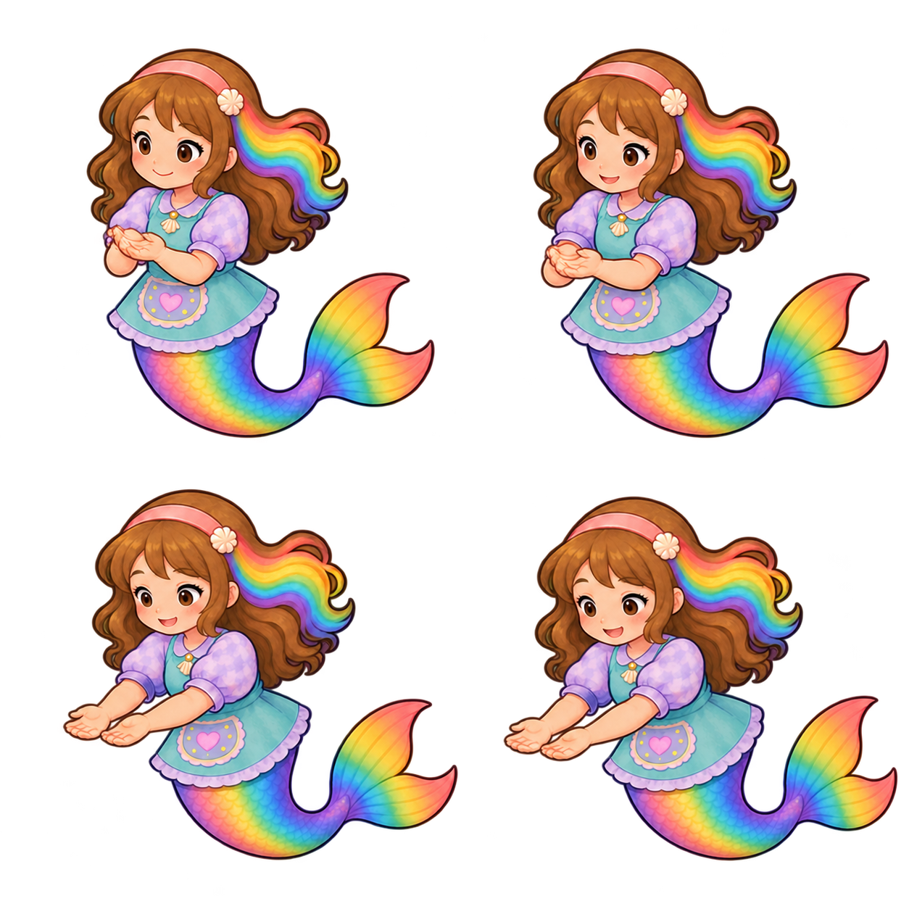

Four lowering bridge source candidates
Four provisional4.6 source-style opinions. Native geometry, fitted sockets and runtime integration remain pending. These keys are not part of the8-key action.

Four individual written reviews · Prompt · Measured named gap · Current action4.2 review